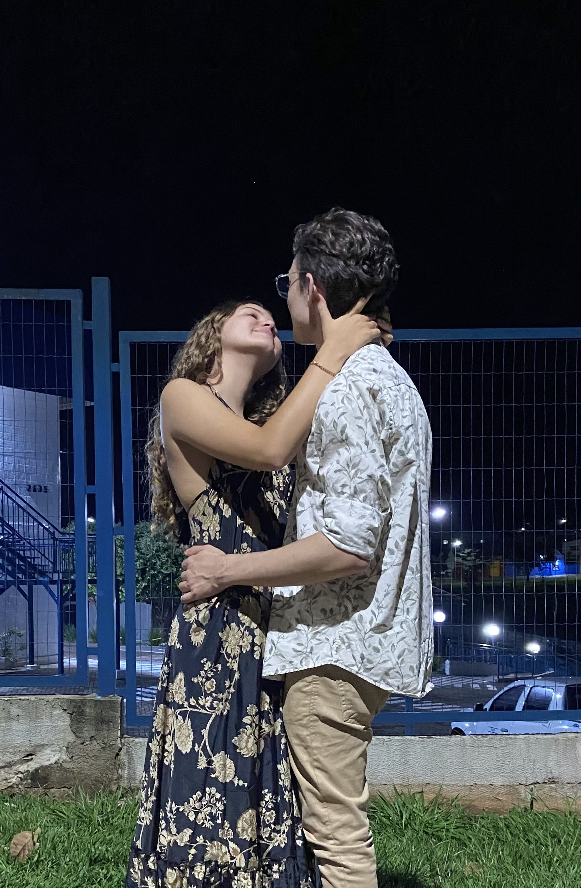
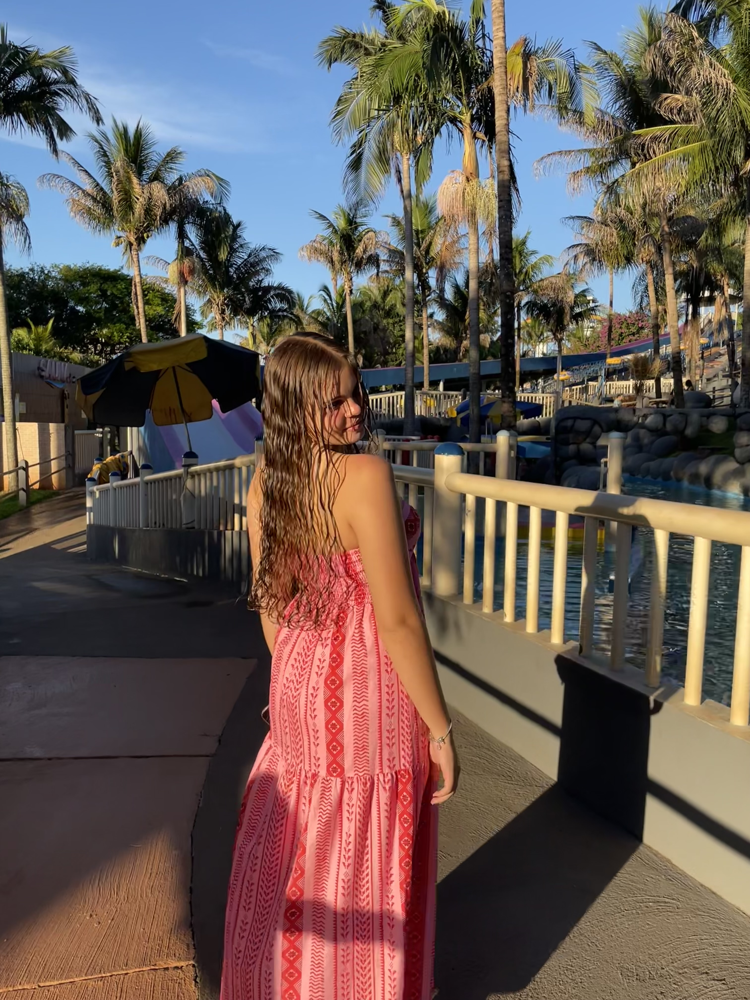
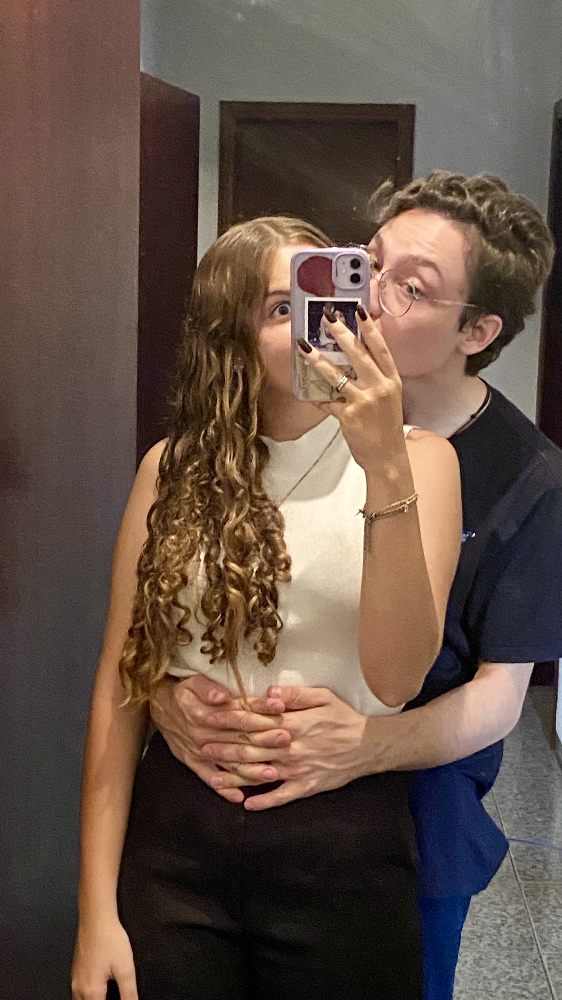
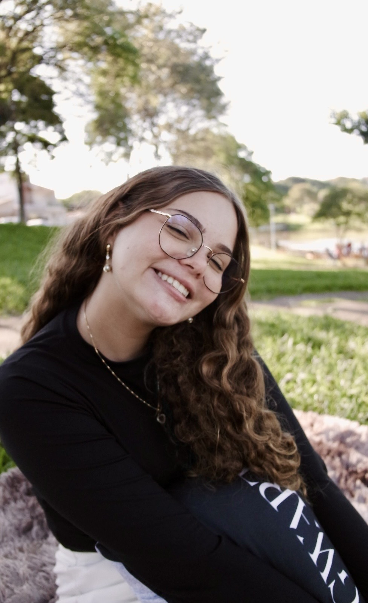
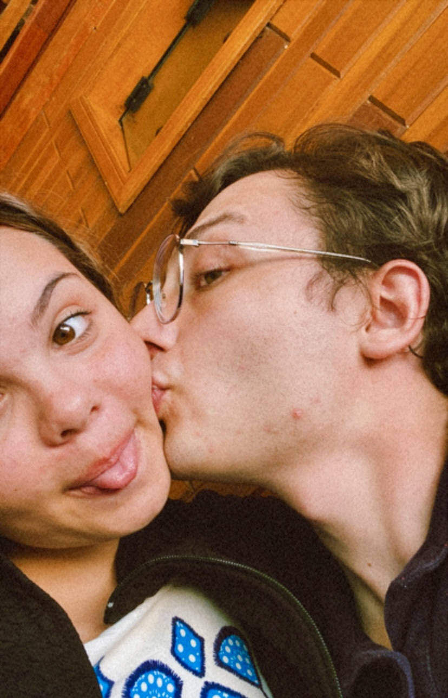

Cada detalhe aqui foi feito para celebrar a sua luz.

Essa não foi a primeira vez que a gente se viu… mas foi a primeira vez que pareceu diferente. Como se, no meio de tudo que já tinha acontecido antes, alguma coisa tivesse finalmente se encaixado do jeito certo. Eu lembro da sensação daquele dia mais do que de qualquer detalhe. Não era só sair, não era só estar ali… era sentir que aquilo tinha peso, tinha verdade. E, sem precisar de nada grandioso, foi ali que eu comecei a entender que você não era só mais alguém na minha vida. Você já estava se tornando alguém que eu não ia querer perder.

Eu tirei essa foto… mas a verdade é que nenhum ângulo consegue mostrar tudo o que você é. Aquele dia foi leve, foi bonito, foi daqueles que a gente queria pausar só pra ficar mais um pouco. E você tava ali, do jeito que sempre fica quando está feliz… sendo simplesmente você. E talvez seja isso que mais me prende: você não precisa forçar nada pra ser incrível. Você só existe… e já muda tudo ao redor.

Nem todo momento precisa ser grande pra ser inesquecível. Tem dias que são só nossos… simples, tranquilos, sem pressa. E mesmo assim, acabam sendo alguns dos melhores que eu já vivi. Porque no fim, não é sobre o que a gente faz. É sobre com quem a gente divide. E eu dividir a vida com você… é, sem dúvida, a melhor parte de tudo.

Esse lugar não é só um lugar. Foi onde tudo começou a ganhar forma… onde os olhares ficaram mais longos, os silêncios mais cheios de significado… e onde, sem perceber, a gente deixou de ser só duas pessoas. Foi ali que veio o primeiro beijo, os primeiros momentos de verdade… e o começo de algo que hoje eu não consigo imaginar sem. Sempre que eu penso nesse lugar, eu não lembro só do cenário. Eu lembro de nós… começando a ser “nós” de verdade.

Tem coisas que mostram mais do que qualquer palavra. Ver você ali, sendo você, conquistando as pessoas que fazem parte da minha vida… só me deu ainda mais certeza do que eu já sentia. Minha vó gosta de você. E isso, pra mim, significa muito mais do que parece. Porque não é só sobre a gente dar certo. É sobre você se encaixar na minha vida de um jeito tão natural… que parece que sempre esteve ali. E, de alguma forma, eu sinto que sempre era pra ser você.
Esse é só o começo da nossa história ❤️